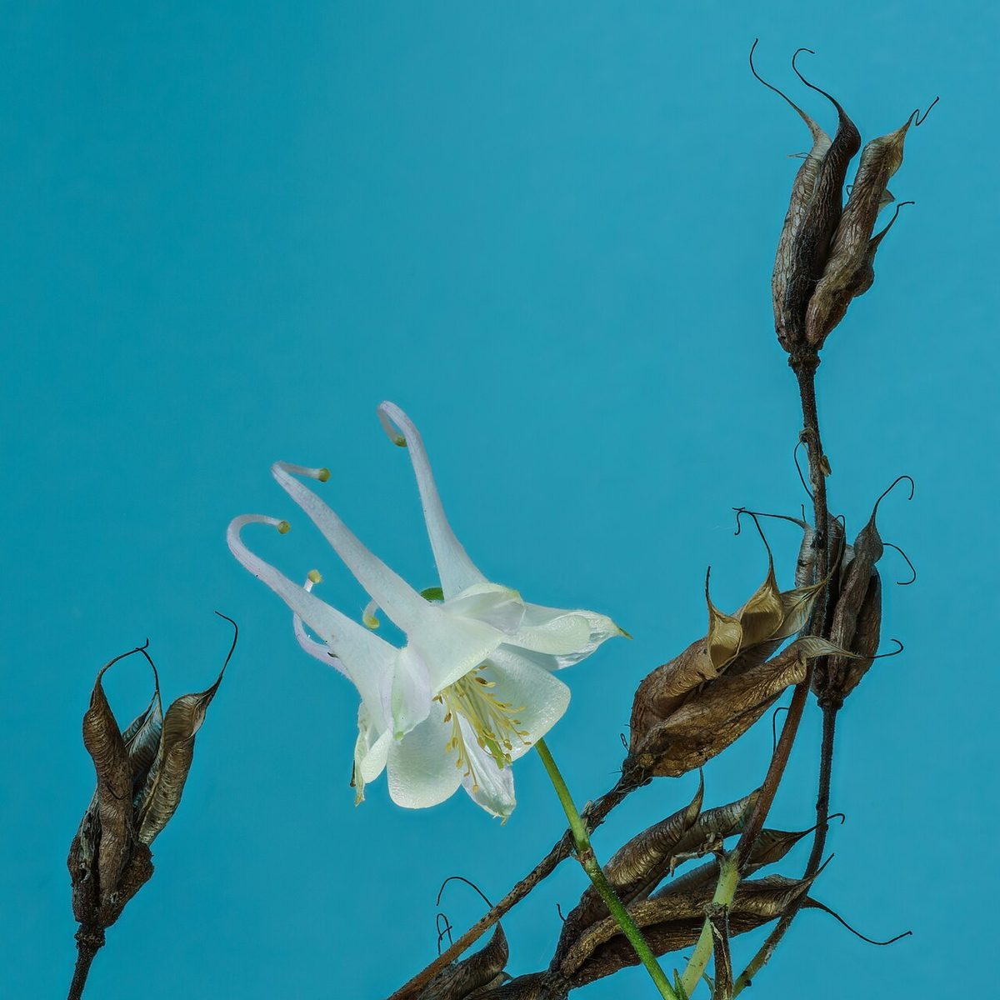
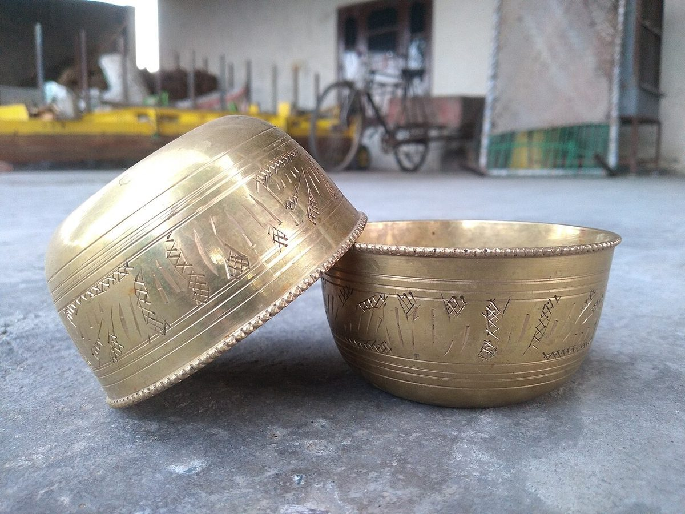
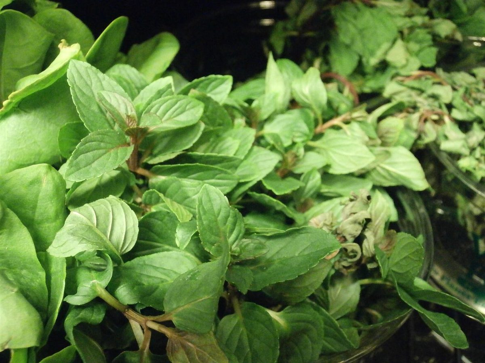

店のこと
店のこと
お店について確認できているのは、所在地とInstagramのアカウントだけです。
このページの「想像してみる」部分は、制作側が想像して書いたものです。お店の実際の様子・考え・メニューとは関係がありません。
確認できていること
- 店名は「紗茶屋spice」、業種はカフェ
- 所在地は千葉県匝瑳市栢田7935-1(〒289-3184)
- 電話番号はなし。連絡はInstagramから
- 営業時間・定休日・メニュー・価格・ご予約・駐車場は準備中

想像してみる
店名の字面から
由来は分かりません。制作側は「紗」「茶」「屋」「spice」という字面から、湯気や香りがふわりと立つ、やわらかな空間かもしれないと想像しました。提供している飲み物や食べ物が何かは分かりません。下の写真は雰囲気のためのフリー素材で、お店のものではありません。

